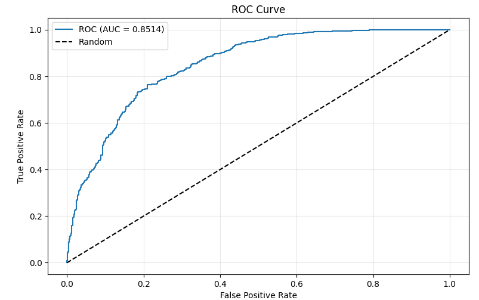
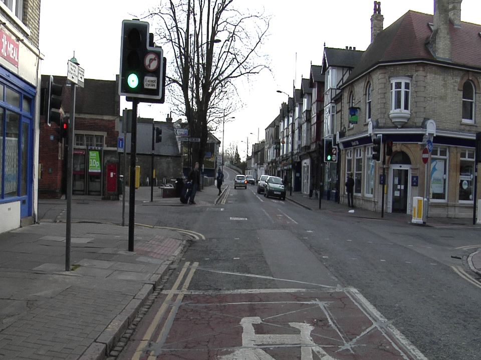
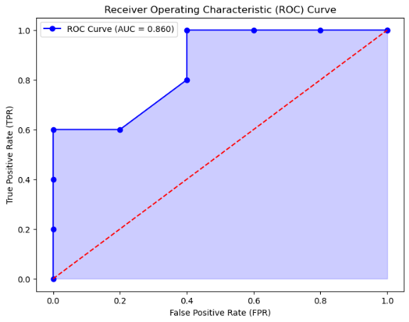

Data Scientist & Analytics Engineer
MS Analytics @ Georgia Tech · ML · Statistical Modeling · Data Engineering
View My WorkAbout Me
I build ML systems end-to-end, from raw data to working model. My first year at Georgia Tech's MS Analytics program produced three deployed projects spanning churn prediction, computer vision, and unsupervised fraud detection. I'm carrying a 4.0.
My background combines computer science, mathematics, and finance, which means I can write the query, build the model, and understand what the output actually means for a business. That combination doesn't come standard.
Outside of work, I follow financial markets closely and spend time on ML research. I tend to gravitate toward problems where the math is interesting and the stakes are real.
Graduate
Georgia Institute of Technology
MS Analytics · GPA: 4.0 · Aug 2025 – Dec 2026
Undergraduate
New York University — Tandon
BS Computer Science · Minors in Mathematics & Finance
Focus Areas
Machine Learning · Risk Modeling · Statistical Analysis · Computer Vision
Academic Background
Georgia Institute of Technology
Atlanta, GACoursework: Computer Vision · Data Analytics in Business · Machine Learning · Understanding Markets with Data Science
New York University — Tandon School of Engineering
New York City, NYMinors in Mathematics & Finance
Coursework: Artificial Intelligence · Data Science · Databases · Data Analysis · Multivariate Calculus
Technical Toolkit
Portfolio

November 2025 · Machine Learning
End-to-end churn prediction across 7 telecom datasets (7,000+ customers). ~85% ROC-AUC; top 10% highest-risk customers accounted for ~77% churn. Evaluated 28 configurations — CatBoost + SMOTE was the top performer.

October 2025 · Computer Vision
Pixel-level labeling of roads, vehicles, and pedestrians in urban driving scenes. ~62% mIoU on an 11-class dataset; ~93% mIoU on binary road segmentation via transfer learning. Compared baselines against PSPNet with dilated convolutions.

September 2025 · Unsupervised Learning
Unsupervised fraud detection on 280,000+ financial transactions with no labeled data. Well-separated behavioral clusters with up to 3× improvement over random baselines. K-Means and GMM evaluated via Silhouette Score and Adjusted Rand Index.
Work History
GoFloaters
Chennai, IndiaReact Native · JavaScript · Git
Get In Touch
I'm always open to collaborations, interesting projects, and conversations about data. Feel free to reach out.